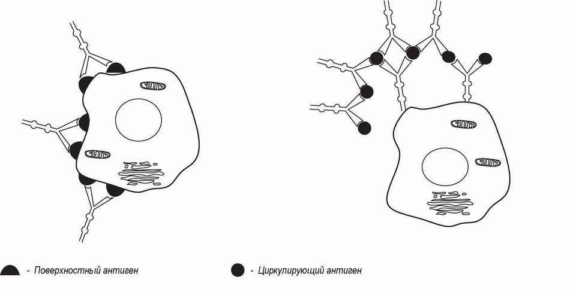
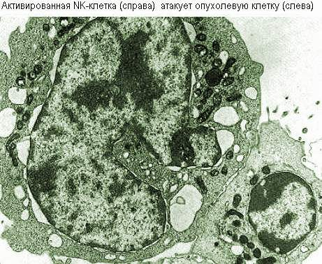
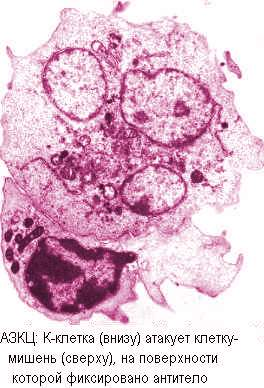

Цитотоксические аллергические реакции
Цитотоксические реакции (реакции II типа) опосредованы антителами к поверхностным антигенам клетки или антителами к антигенам, вторично связанным с клеточной поверхностью. Решающую роль играют антитела, способные активировать комплемент (IgG, IgM). При цитотоксических реакциях, в отличие от других форм ГНТ, антитела взаимодействуют с клетками своей иммуноспецифической частью - F(ab)2 -фрагментами. Если при анафилаксии антитело само играет роль рецептора, то при данной разновидности реакций иммуноглобулин, наоборот, часто имеет мишенью клеточный рецептор.


.....
- активация иммунным комплексом на поверхности клетки-мишени комплемента.
- опсоническое действие цитотоксических антител и фрагментов активированного комплемента, в частности С3b и C3d, запускающее фагоцитоз клеток-мишеней или, для крупных и фиксированных в ткани объектов - фрустрированный фагоцитоз с экзоцитозом медиаторов.
- Цитотоксические антитела способны опосредовать прикрепление больших гранулярных лимфоцитов и других К-клеток - к клеткам-мишеням и вызывать повреждение путем антителозависимой клеточной цитотоксичности (АЗКЦ). При АЗКЦ антитела первично специфически связываются Fab-фрагментами с соответствующими детерминантами клеточной мембраны; это специфическая стадия. Во второй - неспецифической стадии клетки, несущие рецепторы к Fc-фрагменту антител (макрофаги, лимфоциты, моноциты, гранулоциты) активируются, причем макрофаги и К-клетки, а при противоопухолевых реакциях - и NK-клетки (нуль-клетки - лимфоциты, которые проявляют активность в АЗКЦ, но не несут маркеров, типичных для Т- и В-лимфоцитов) способны оказать цитотоксический эффект на клетку, помеченную антителами, с помощью перфориноподобного механизма, не поглощая мишень. Механизм АЗКЦ может иметь значение при ряде аутоиммунных заболеваний (хронический прогрессирующий гепатит, язвенный колит, тироидит, и пр.), антиопухолевом иммунитете, паразитарных и вирусных заболеваниях, а также реакциях отторжения трансплантата.
|
|
|
|
|
|